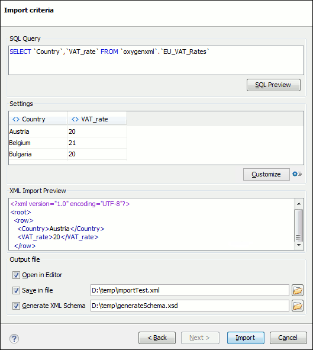

Import Database Data as an XML Document
To import the data from a relational database table as an XML document, follow these steps:
-
Go to to start the
Import wizard.
This opens a Select database table dialog box that lists all the defined database connections:
Figure 1. Select Database Table Dialog Box 
-
Select the connection to the database that contains the appropriate data.
Only connections configured in relational data sources can be used to import data.
-
If you want to edit, delete, or add a data source or connection, click the
Configure Database Sources button.
The Preferences/Data Sources option page is opened.
- Click Connect.
- In the list of sources, expand a schema and choose the required table.
-
Click the Next button.
The Import Criteria dialog box is opened with a default query string in the SQL Query pane.
Figure 2. Import from Database Criteria Dialog Box  -
Configure the settings for the conversion.
-
SQL Preview - If this button is pressed, the Settings
pane displays the labels that are used in the XML document and the first five lines
from the database. By default, all data items are converted to element content
(
 symbol), but this can be overridden by clicking the individual column
headers. Clicking a column header once causes the data from this column to be
converted to attribute values ( symbol). Clicking a second time causes the
column data to be ignored ( symbol) when generating the XML file. You can
cycle through these three options by continuing to click the column header.
symbol), but this can be overridden by clicking the individual column
headers. Clicking a column header once causes the data from this column to be
converted to attribute values ( symbol). Clicking a second time causes the
column data to be ignored ( symbol) when generating the XML file. You can
cycle through these three options by continuing to click the column header.
- Customize - This button opens a Presentation Names dialog box that allows you to edit the name, XML name, and conversion criterion for the root and row elements. The XML names can be edited by double-clicking the desired item and entering the label. The conversion criteria can also be modified by selecting one of the following option in the drop-down menu: ELEMENT, ATTRIBUTE, or SKIPPED.
-
 Import
Settings - Clicking this button opens the Import preferences page that allows you to
configure more import options.
Import
Settings - Clicking this button opens the Import preferences page that allows you to
configure more import options.
- The XML Import Preview panel contains an example of what the generated XML document looks like.
- Open in editor - If selected, the new XML document created from the imported file is opened in the editor.
- Save in file - If selected, the new XML document is saved in the specified path.
- Generate XML Schema - Allows you to specify the path of the generated XML Schema file.
-
SQL Preview - If this button is pressed, the Settings
pane displays the labels that are used in the XML document and the first five lines
from the database. By default, all data items are converted to element content
(
- Click Import to generate the XML document.